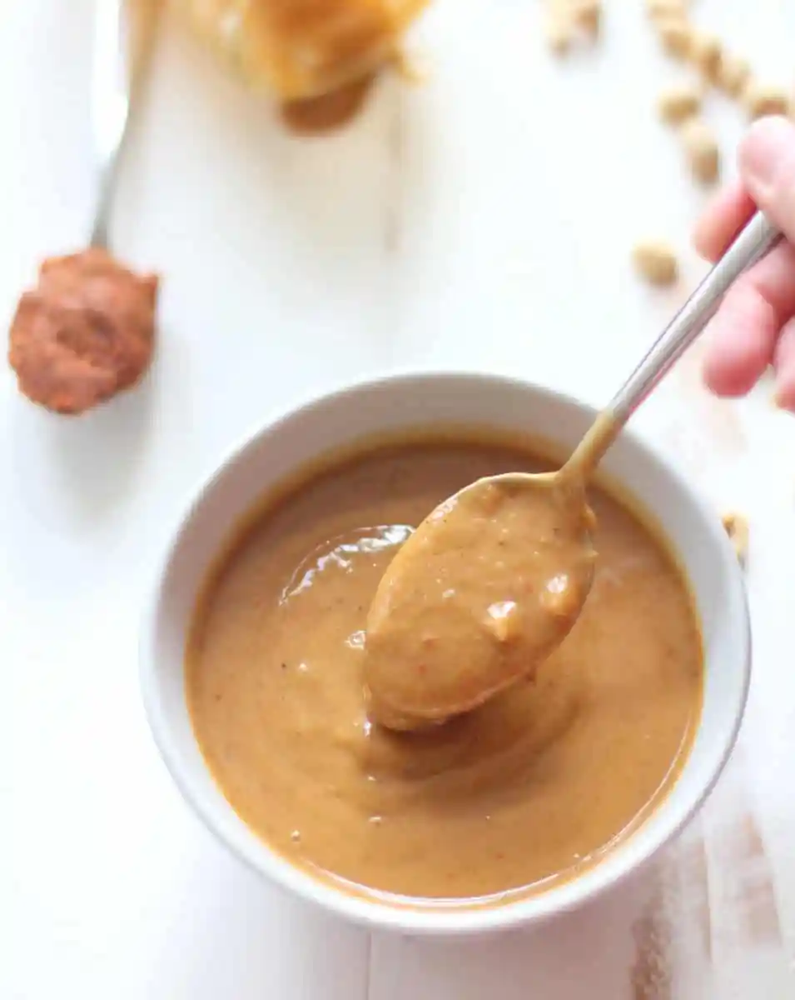

Thai Peanut Sauce

This is a recipe for my favorite Thai Peanut Sauce! It's a tasty addition to any stirfry, you could even use it as a pasta or pizza sauce. You can find the original recipe here.
Ingredients
- 1 1/2 tablespoons minced garlic
- 1 1/2 tablespoons ginger paste or shredded ginger
- 3 tablespoons soy sauce or tamari
- 2 teaspoons chili oil or chili flakes
- 1 tablespoons sesame oil
- 2 tablespoons peanut butter
- 2 tablespoons fresh lime juice
- 1/4 cup brown sugar
Instructions
- Combine all ingredients in a blender and blend until smooth.
- If you don't have a blender, put all the ingredients in a mason jar (with a lid). Then, simply shake until ingredients are mixed.